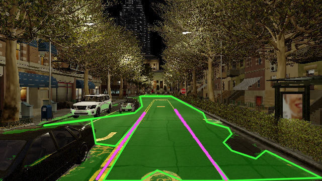

项目技术流程
四个模块，一条可追溯的链路。
代码按技术职责组织，每个阶段连接实现、配置、校验与已发布结果。
项目技术流程
代码按技术职责组织，每个阶段连接实现、配置、校验与已发布结果。
关键工程决策

场景 / 连续帧块分组与缓冲帧用于控制泄漏，公开校验记录显示组重叠与精确图像重叠均为零。
查看划分校验 ↗道路参与者与交通控制目标由不同检测器负责，同一 test 下 mAP50 从 0.473 提升至 0.704。
查看检测指标 ↗夜间 mIoU 从 0.004 提升至 0.778；暴雨 mIoU 从 0.659 变为 0.637。两种变化均保留在记录中。
查看适配前后对比 ↗评估证据
检测、分割与视频播放描述不同的测量。首页数字均可追溯到对应实验与评估范围。
| 实验 | 评估集 | 结果 |
|---|---|---|
| 检测融合 | 300 张分组 test / 3,472 个目标 | mAP50 0.704 · mAP50–95 0.403 |
| 道路分割 | 175 张固定 test | 道路 IoU 0.749 · 车道线 IoU 0.603 |
| 分割审计 | 75 张独立阴天夜间图像 | 道路 / 车道线 mIoU 0.796 |
审计集在模型固定后评估，不替代固定 test。笔记本部署测速不代表实际车载相机到控制端到端延迟。
查看评估协议与原始证据 →